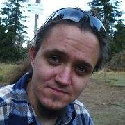

About Me
Born in Cracow, he's been living here
ever since. By education a naturalist, from the nature a
phlegmatic who likes to walk in the mountains, ride a bike,
work in wood and play board games.
The most he doesn’t like
a lack of understanding derived from lack of communication,
and loves when the task is well done. Sometimes he's a loner,
sometimes just the opposite. Likes to considering problems
while walking with his dog and hates being late.
He prefers
getting to the point instead of distracting himself with side
topics. If he has time, he likes to think carefully about
decisions he's going to make.
Trails
In this section you will find descriptions of trips that I recommend in the vicinity of Krakow. Each of them has its degree of difficulty, parameters and description, so you can decide if specific route interests you.
check out trailsGallery
I invite you to see my photos from the described trips. I warn you - I am not a professional, and the places shown in the pictures may look different when you read this. Nonetheless it gives you a taste of what awaits when you go there
see the photosContact
If you have any questions, doubts, or just want to make an excursion into the mountains - feel free to write to me!
write to me